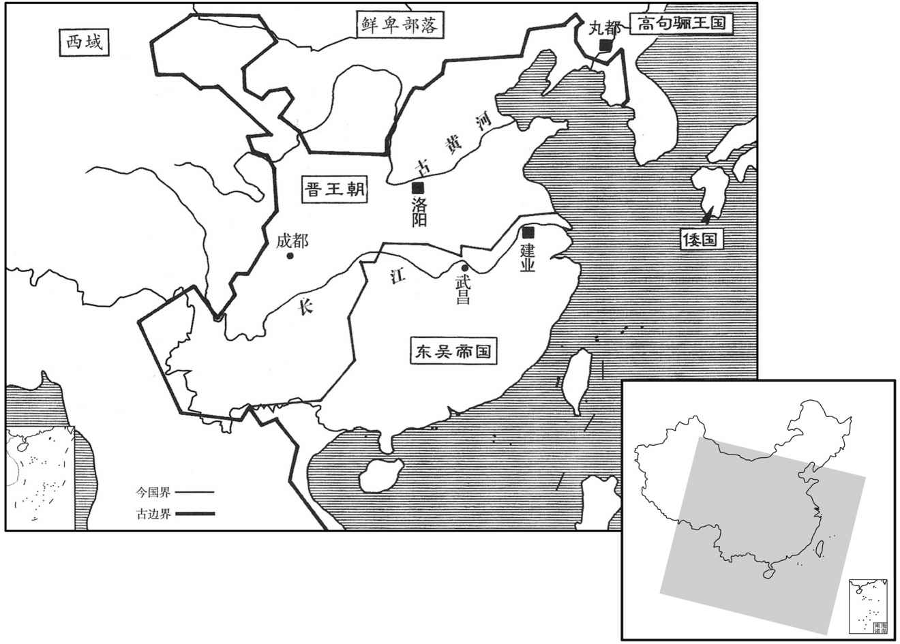

公元266年资治通鉴：本年记事、原文与白话对照
按原书编年位置阅读；追叙和史论不等于本年发生的事件。白话采用所据译本，缺译不以生成译文补齐。
卷79 · 本年记事
公元266年 · 晋世祖武皇帝泰始二年
二年〔（丙戌、二六六）〕
上传原文的注释括号有异常，字符原样保留；无法可靠划分的段落默认全文显示。
本年事件索引（现代整理）
- 晋武帝以魏庙制度祭祀司马氏七代祖先
- 晋武帝尊羊氏为景皇后，居于弘训宫
- 晋武帝立杨文宗之女为皇后
- 晋廷撤去明堂、南郊的五帝神位
- 解除对汉朝宗室的禁锢
- 吴国遣使吊祭晋文帝
- 孙皓醉后疑王蕃诈醉，下令将其斩杀
- 陆凯反对趁魏蜀新亡进攻北方，孙皓与晋断交
- 王沈去世
- 六月晦日食
- 晋武帝坚持为文帝居丧，诏命群臣随行穿丧服
- 羊祜、傅玄争论君臣是否应一同恢复三年之丧
- 晋武帝拒绝除服，守丧三年以尽孝道
- 司马光称赞晋武帝恪守古礼，批评群臣阻止其行孝
- 吴国改元宝鼎
- 陆凯劝孙皓允许臣下直视君主，孙皓只准陆凯如此
- 陆凯劝孙皓节省民力、整肃官吏并迁回建业
- 晋武帝诏令群臣遇有不便时不可隐瞒实情
- 晋朝沿用前代正朔与服色
- 十月朔日食
- 施但劫持孙谦起兵攻向建业，叛乱被平定
- 晋廷合并圜丘、方丘祭祀于南北郊
- 晋朝撤除山阳国督军与禁制
- 孙皓迁都建业，冷落滕皇后并大肆征选宫女

本年形势与背景参考图
春，正月，丁亥，即用魏庙祭征西府君以下，并景帝凡七室。〔沈约志曰：晋初祭征西将军、豫章府君、颍川府君、京兆府君，与宣皇帝、景皇帝、文皇帝为三昭三穆。是时，宣皇未升，太祖虚位，所以祠六世，与景帝为七庙。其礼则据王肃说也。〕
春季，正月，丁亥（初八），就便利用魏庙，祭祀征西府君司马钧以下，连同景帝司马师共七个堂屋。
尊〔【章：甲十一行本「尊」上有「辛丑」二字；乙十一行本同；孔本同；张校同。】〕景帝夫人羊氏日景皇后，居弘训宫。
两版字句有差异，建议核对原文。
辛丑（二十二日），尊奉景帝夫人羊氏为景皇后，居住在弘训宫。
丙午，立皇后弘农杨氏；后，魏通事郎文宗之女也。〔魏黄初初，中书既置监、令，又置通事郎。〕
丙午（二十七日），立弘农人杨氏为皇后。皇后是魏通事郎杨文宗的女儿。
群臣奏：「五，即天帝也，王气时异，故名号有五。自今明堂、南郊宜除五帝座。」从之。帝，王肃外孙也，故郊祀之礼，有司多从肃议。〔周礼曰：祀昊天上帝，则服大裘而裘而冕；祀五帝亦如之。郑玄以为昊天上帝者，天皇大帝，北辰耀魄宝也。五帝者，五行精气之神也，日青帝灵威仰，曰赤熛怒，曰黄帝含枢纽，曰白帝白招矩，曰黑帝汁光纪。由是有六天之说。六天者，指其尊极清虚之体，其实是一；论其五时生育之功，其别有五，故为六天。据其在上之体，谓之天；天为体称，故说天云，天，颠也。因其生育之功，谓之帝；帝为德称，故毛诗传云：审谛如帝。王肃驳之，以为五帝非天，唯用家语之文，谓太皞、炎帝、黄帝、少皞、颛顼五帝，为五人帝。晋群臣祖肃之说，以为五帝即天帝，王气时异，故殊其号虽五，其实一神。明堂、南郊，宜除五帝之座，五郊改五精之号，同称昊天下帝，从之。王，于况翻。〕
群臣上书说：“五帝就是天帝，王气时时不同，所以名号有五个。从现在起，明堂、南郊都应当除去五帝的位置。”晋武帝听从了这一建议。晋武帝是王肃的外孙，所以祭天地的礼仪，有关官吏大都遵从王肃的意见。
二月，除汉宗室禁锢。〔魏既代汉，禁锢诸刘，今除之。〕
二月，解除魏对汉宗室的禁锢。
三月，〔【章：甲十一行本「月」下有「戊戌」二字；乙十一行本同；孔本同；张校同；退斋校同。】〕吴遣大鸿胪张俨、五官中郎将丁忠来吊祭。〔以文王之丧也。胪，陵如翻。〕
两版字句有差异，建议核对原文。
三月，戊戌（二十日），吴国派遣大鸿胪张俨、五官中郎将丁忠到晋朝吊祭。
吴散骑常侍王〔【章：甲十一行本「王」上有「庐江」二字；乙十一行本同；孔本同；；退斋校同。】〕蕃，体气高亮，不能承颜顺指，吴主不悦。散骑常侍万彧、中书丞陈声从而谮之。〔散，悉亶翻。骑，奇寄翻。〕丁忠使还，〔使，疏吏翻。还，从宣翻，又如字。〕吴主大会群臣蕃沈醉顿伏。〔沈，持林翻；下王沈同〕吴主疑其诈，轝蕃出外。〔轝，羊茹翻。〕顷之，召还。蕃好治威仪，〔好，呼到翻。治，直之翻。〕行止自若。吴主大怒，呵左右于殿下斩之，出，登来山，〔水经注：武昌城南有来山，即樊山也。吴孙暼登之，使亲近掷王蕃首而虎争之。〕使亲近掷蕃首，作虎跳狼啮之，〔跳，他吊翻。咋，侧革翻，啖也。啮，鱼结翻，噬也。〕首皆碎坏。
吴国散骑常侍、庐江人王蕃，气质、风度高尚，不会看人脸色顺从其意行事，吴主对此不高兴。散骑常侍万、中书丞陈声便乘机诬陷他。丁忠出使回来。吴主大会群臣，王蕃喝醉了酒，趴伏在那里起不来。吴主疑心他是故意装出来的，就用车子把他送出去，过了一会儿，又召他回来。王蕃容貌举止庄严，行止自如，吴主勃然大怒，喝令左右在殿堂之下把他杀了，然后出去登来山，让左右亲随抛掷王蕃的首级，像虎狼那样争抢啃咬，使其首级啐裂。
丁忠说吴主曰：「北方无守戢之备，弋阳可袭而取。」〔弋阳县，汉属汝南郡，魏文帝分立弋阳郡。说，输芮翻。〕吴主以问群臣，镇西大将军陆凯曰：「北方新并巴、蜀，遣使求和，非援于我也，欲蓄力以俟时耳。敌势方强，而欲徼幸求胜，未见利也。」〔徼，工尧翻。〕吴主虽不出兵，然遂与晋绝。凯，逊之族子也。
丁忠对吴主说：“北方的晋国没有做好战备，我们可以袭击并夺取弋阳。”吴主询问群臣，镇西大将军陆凯说；“北方新近吞并了巴、蜀，派使者来求和，这并不是向我们求援，只不过是想积蓄力量以等待时机。敌人的势力正当强大的时候，想要侥幸取胜，我看不出这样做有什么好处。”吴主虽然不出兵了，但是却与晋国断绝了关系。陆凯是陆逊同族兄弟的儿子。
夏，五月，壬子，博陵元公王沈卒。〔沈，持林翻。〕
夏季，五月，壬子（疑误），博陵元公王沈去世。
六月，丙午晦，日有食之。
六月，丙午晦（疑误），出现日食。
文帝之丧，臣民皆从权制，三日除服。既葬，帝亦除之；然犹素冠疏食，〔食，祥使翻。〕哀毁如居丧者。秋，八月，帝将谒崇阳陵，群臣廿奏言，秋暑未平，恐帝悲感摧伤。帝曰：「朕得奉瞻山陵，体气自佳耳。」又诏曰：「汉文不使不下尽哀，亦帝王至谦之志。〔汉文帝遣诏见十五卷后七年。真德秀曰：文帝此诏，乃短丧之始也。然本文盖为吏民设耳，景帝嗣君也，可缘此而短其丧乎！〕当见山陵，何心无服！其议以衰绖从行。〔衰，七回翻。〕群臣自依旧制。」尚书令裴秀奏曰：「陛下既除而复服，义无所依；若君服而臣不服，亦未之敢安也。」诏曰：「患情不能跂及耳，衣服何在！〔言患哀慕之情不至耳，不在乎服也。跂，去智翻，举踵也。〕诸君勤勤之至，岂苟相违。」遂止。
晋文帝的丧事，臣民都遵守临时制定的法令，服丧三日。葬礼结束，晋武帝也除去丧服，但仍然戴白冠，吃素食，哀伤如同丧期。秋季，八月，晋武帝将要拜谒崇阳陵，群臣上奏称，秋暑还没有平息，恐怕皇帝悲哀伤感会损害健康。晋武帝说：“朕能够瞻仰先人陵墓，身体、精神自然就会好。”又下诏说：“汉文帝不使天下的臣民都为他而悲哀，这也达到帝王谦逊的最高点了。要拜见先人陵墓，怎么忍心不穿丧服！应当决定穿丧服，群臣自然可依照旧制行事。”尚书令裴秀上奏说：“陛下已经除去了丧服而现在又穿上，这样做于礼仪没有依据，如果君王穿丧服而臣下却不穿，做臣子的心里也不安。”晋武帝下诏说：“朕担忧的是，哀慕之心不能充分地表达出来，不在乎丧服。诸位一片殷勤的好意，朕不忍再违背了。”于是同意不穿丧服。
中军将羊祜谓传玄曰：「三年之丧，虽贵遂服，礼也。〔三年之丧，自天子达于庶人，言虽以天子之贵，亦得以遂其孝思为三年之服。〕今〔【章：甲十一行本「今」上有「而汉文除之，毁伤礼义」九字；乙十一行本同；张校同；「义」下有「常以叹息」四字。】〕主上至孝，虽夺其服，实行丧礼。若因此复先王之法，不亦善乎！」玄曰：「以日易月，已数百年，〔以日易月，汉儒之谬说也；注见十五卷汉文帝后七年。〕一旦复古，难行也。」祜曰：「不能使天下如礼，且使主上遂服，不犹愈乎！」玄曰：「主上不除而天下除之，此为但有父子，无复君臣也。」乃止。
中军将军羊祜对傅玄说：“三年之丧，即使尊贵为天子也要身穿孝服，这是礼制。但是汉帝却把它废除了，毁坏、损伤礼义，我常常因此叹息。如今皇帝至孝，虽然除去了丧服，仍实行丧礼。如果能借此机会恢复先王的法规，难道不是很好吗？”傅玄说：“把穿丧服的时间从以月计改为以日计，已经有几百年了，一旦要恢复古制，是很难行得通的。”羊祜说：“不能使天下人都遵从礼法，暂且使皇帝再穿孝服，不是还好些吗？”傅玄说：“皇帝不除丧服而天下除丧服，这就是只有父子，不再有君臣的行为。”羊祜于是不再提让天下恢复古制的话。
戊辰，群臣奏请易服复膳，诏曰：「每感念幽冥，而不得终苴绖之礼，〔左传：齐晏桓子卒，晏婴粗缞苴绖带。杜预注云：苴，麻之有子者，取其粗也。苴，七余翻。〕以为沈痛。〔沈，持林翻，深也。〕况当食稻衣锦乎！〔衣，于既翻。〕适足激切其心，非所以相解也。朕本诸生家，传礼来久，何至一旦便易此情于所天！相从已多，可试省孔子答宰我之言，〔论语：宰我问：「三年之丧，期已久矣。君子三年不为礼，礼必坏；三年不为乐，乐必崩。旧榖既没，新榖既升，期可已矣。」孔子曰：「食夫稻，衣夫锦，于女安乎﹖」曰：「安。」孔子曰：「女安，则为之。」宰我出，孔子曰：「序之不仁也！子生三年，然后免于父母之怀。夫三年之丧，天下之通丧也。」仪礼曰：寸者，子之天。省，悉景翻。〕无事纷纭也！」遂以疏素终三年。
戊辰（二十二日），群臣上奏请求晋武帝更换正常的服饰和膳食，晋武帝下诏说：“每当感念先灵，而朕不能完成穿丧服之礼，就为此沉痛，更不要说吃稻米、穿锦绣了。这样做只会激起朕的痛切之心，不能够缓解朕的沉痛。朕本生于儒者之家，礼法传习已久，何至于一时之间便对自己的父亲改了这种感情！听从你们的已经够多了，你们可以对照孔子回答宰我的话反省自己，不要再多说了。”于是以素食素服度过三年。
史家评论 · 原文及其白话
臣光曰：三年之丧，自天子达于庶人，此先王礼经，百世不易者也。汉师心不，学，变古壤礼，〔坏，音怪。〕绝父子之恩，亏君臣之义；后世帝王不能能笃于哀戚之情，而群臣谄谀，莫肯厘正。〔厘，力之翻，理也。〕至于晋武独以天性矫而行之，可谓不世之贤君；而裴、傅之徒，固陋庸臣，习常玩故，而不能将顺其美，惜哉！〔孝经曰：君子之事上也，将顺其美，匡救其恶。注云：将，奉也。〕
臣司马光曰：上自天子，下至平民百姓，都要服丧三年，这是先王礼经所规定，百世不可改变。汉文帝以已意为师，不守成规，改变古制，败坏礼法，断绝父子之间的恩德，毁坏君臣之间的情义，使后世的帝王不能真诚专一于哀悼先人的感情，而群臣谄媚、阿谀，没有人肯加以改正。到了晋武帝，唯独以自己的天性加以纠正并实行，可称是非凡的贤君。而裴秀、傅玄之徒，是见识鄙陋的平庸之臣，习惯于常规，拘守行之已久的习俗，不能够承顺晋武帝的美意，可惜啊！
吴改元宝鼎。〔以所在得大鼎改元。〕
吴国改年号为宝鼎。
吴主以陆凯为左丞相，万彧为右丞相。吴主恶人视己，群臣侍见，莫敢举目。〔恶，乌路翻。见，贤遍翻。〕陆凯曰：「君臣无不相识之道，若猝有不虞，不知所赴。」吴主乃听凯自视，而他人如故。〔唯凯得视之，他人人仍旧不得视也。〕
吴主任命陆凯为左丞相，万为右丞相。吴主憎恶别人注视他，群臣朝见或在一旁侍候，没有人敢抬眼看他。陆凯说：“君臣之间没有不相识的道理，如果突然发生了意料不到的事情，就不知道该怎么办了。”吴主于是听凭陆凯注视他，而对别人却依然如故。
吴主居武昌，提州之民泝流供给，甚苦之，〔吴武昌属荆州，而丹阳、宣城、毗陵、吴、吴兴、会稽、东阳、新都、临海、建安、豫章、临川、鄱阳、庐陵皆属扬州，故苦于西上，柝流以供给。〕又奢侈无度，公私穷匮。凯上疏曰：「今四边无事，当务养民丰财，而更穷奢极欲；无灾而民命尽，无为而国财空，臣窃忧之。昔汉室既衰，三家鼎立；今曹、刘失道，皆为晋有，此目前之明验也。臣愚但为陛下惜国家耳。武昌土地危险塉确，〔塉，秦昔翻，土薄也。确，克角翻，山多大石也。〕非天者之都；且童谣云：『宁饮建业水，不食武昌鱼；宁还建业死，不止武昌居。』〔此苦于泝流供给而为是谣也。〕以此观之，足明人心与天意矣。今国无一年之蓄，〔礼记王制：国无六年之蓄曰国非其国也。况无一年之蓄乎！〕民有离散之怨，国有露根之渐，〔以木为喻也。木之所以能生殖者，以有根本也，根渐露，则其本将拨。〕而官吏务为苛急，莫之或恤。大帝时，后宫列女及诸织络数不汉百，景帝以来，乃有千数，此耗财之甚也。又左右之臣，率非其人，群党相扶，害忠隐贤，此皆蠹政病民者也。臣愿陛下省息百役，罢去苛扰，料出宫女，〔去，羌吕翻。料，音聊。〕清选百官，则天悦民附，国家永安矣。」吴主虽不悦，以其宿望，特优容之。〔考异曰：陈寿曰：「予连从荆、扬来者，得凯所谏暼二十事，博问吴人，多云不闻凯有此表。又按其文殊甚切直，恐非暼之所能容忍也。或以为凯藏之箧笥，未敢宣行，病困，暼遣董朝省问欲言，因以付之。虚实难明，故不着于篇；然爱其指擿暼事，足为后戒，故钞列于凯传左。」今不取。
两版字句有差异，建议核对原文。
吴主居住在武昌，扬州的百姓逆流而上提供物资，异常劳苦。再加上吴主奢侈无度，使得国家和人民都穷困匮乏。陆凯上疏说：“如今四周边境都没有战事，应当致力于休养民力，积蓄财富，然而却愈发穷奢极欲；还没有发生灾难而百姓的精力已尽，还没有什么作为而国库的资财已经空虚，我私下为此感到忧虑。从前汉室衰微，三家鼎立，如今曹、刘失道，都被晋所占有，这是近在眼前的、十分明显的证据。我蠢笨无知，只是为陛下珍惜国家而已。武昌地势高险，土质薄，多山石，并非帝王建都的地方，况且童谣说：‘宁饮建业水，不食武昌鱼；宁还建业死，不在武昌居。’由此看来，是可以证明人心与天意了。现在国家仅有不足一年的积蓄，百姓有离散的怨言，国家这棵大树已经渐渐露出了根本，而官吏却致力于苛刻催逼百姓，没有人体恤他们。大帝的时候，后宫的女子以及各种织工，人数不足百人，景帝以来，人数已经上千，这就使资财的耗费非常严重了。另外，您身边的臣子，大多没有什么才能，他们结成帮派相互扶持，陷害忠良，埋没贤达，这都是些损政害民的人。我希望陛下减省、停止多种劳役，免去苛刻的骚扰，清理、减少宫女，严格选拔官吏，那么就会使天喜悦而民归附，国家长久安定了。”吴主虽然不高兴，但由于陆凯的名望大，就对他特别宽容。
九月，诏：「自今虽诏有所欲，及已奏得可，而于事不便者，皆不可隐情。」〔既不可希指迎合又不可以遂事而谏也。〕
九月，晋武帝下诏书：“从现在开始，即使诏令有要求，以及已上奏并获得批准，但是在实际执行中有不便之处的，都不得隐瞒实情。”
戊戌，有司奏：「大晋受禅于魏，宜用前代正朔、服色，如虞遵唐故事。」从之。〔家语：季康子问于孔子曰：「唐、虞二帝其所尚何色﹖」孔子曰：「尧以火德王，色尚黄；舜以土德王，色尚青。」董什舒策引孔子曰：「无为而治者，其舜乎！改正朔，易服色，以顺天命而巳，具余尽循尧道，何更为哉！」如二说，则舜之承尧，固改正朔，易服色矣。然考之古文尚书：尧命羲和，历象日月星辰，敬授人时。舜正月上日，受终于文组。协时月正日而巳，不言改正朔也。易大传曰：黄帝、尧、舜垂衣裳而天下治。书益稷，帝曰：「予欲观古人之象，以五采彰施于五色，」作服而巳，不言易服色也。汉兴六历，有黄帝历、颛顼历、夏历、殷历、周历、鲁历，无尧舜历，岂尧、舜时用颛顼历邪﹖孔颖达以为古之真历，至战国及秦而亡，汉初所存六历，后人托而为之。此固无从考正也。〕
戊戌（二十三日），有关部门上奏称：“大晋受到魏的禅让，应当一概沿用前代历法与车马祭牲的颜色，如同虞舜遵循唐尧旧制一样。”晋武帝听从了这一意见。
冬，十月，丙午朔，日有食之。〔考异曰：未书志无此食。今从晋书。〕
冬季，十月丙午朔（初一），出现日食。
永安山贼施但，〔吴录曰：永安，今武康县也。沈约曰：吴分乌程、余杭立永安县，晋武帝太康元年，更名武康，属吴兴郡。宋白曰：永安县，本汉乌程县之余不乡。〕因民劳怨，聚众数千人，劫吴主庶弟永安侯谦作乱，北至建业众万余人，未至三十里住，择吉日入城。遣使以谦命召丁固、诸葛靓，固、靓斩其使，发兵逆战于牛屯。〔据吴历，牛屯去建业城二十一里。靓，疾正翻。〕但兵皆无甲胄，实时败散。谦独坐车中，生获之。固不敢杀，以状白吴主，吴主并其母及弟俊皆杀之。初，望气者云：荆州有王气，当破扬州。〔王，于况翻。〕故吴主徙都武昌。及但反，自以为得计，遣数百人鼓噪之建业，杀但妻子，云「天子使荆州兵来破扬州贼。」
永安山贼施但，乘百姓劳苦有怨言，聚集了民众数千人，动持了吴主庶弟、永安侯孙谦作乱。他们向北到建业，徒众有一万余人，离建业不到三十里时驻扎下来，选择吉日进城。施但派使者以孙谦的名义召丁固、诸葛靓，丁固、诸葛靓杀了使者，发兵在牛屯迎战施但。施但的兵士都没有盔甲，立时就被打败而逃散了。孙谦独自坐在车子里，被活捉了。丁固不敢杀他，把情况禀告吴主，吴主连同孙谦的母亲及弟弟孙俊都杀了。当初，望云气的人说：荆州有帝王之气，应当能攻破扬州。因此吴主迁都到武昌。等到施但造反，吴主自以为预言应验了，就派遣数百人击鼓叫进入建业，杀了施但的妻子儿女，说：“天子派荆州兵来打败扬州贼。”
十一月，初并圜丘、方丘之祀于南北郊。〔郑氏注礼记：为高必因丘陵，谓冬至祭天于圜丘之上；为下必因川泽，谓夏至祭地于方泽之中。而四郊之祭，又在圜丘方泽之外。魏景初元年，始营洛阳南委粟山为圜丘，以冬至祭皇帝天于圜丘，夏至祭皇皇后地方丘；而天郊所祭曰皇天之神，地郊所祭曰皇地之祇。今以二至之祀合于二郊，是后圜丘、方泽不别立。〕
十一月，晋开始把冬至一圜丘祭天、夏至在方泽祭地的仪式合并于南郊和北郊。
罢山阳国督军，除其禁制。〔魏奉汉献帝为山阳公，国于河内山阳县之浊鹿城，置督军以防卫之。至晋时，帝孙康嗣立，人心去汉久矣，故罢其卫兵，除其禁制。〕
晋罢免了汉朝后裔居住的山阳国的监督卫队，解除了对山阳国的禁制。
十二月，吴主还都建业，〔考异曰：吴志陆凯传：或曰：「宝鼎元年十二月，凯与丁奉、丁固谋因暼谒庙，欲废暼，立孙休子。时左将军留平领兵先驱，故密语平，平拒而不许，誓以不泄，是以不果。」按凯尽忠执义，必不为此为事。况暼残酷猜忌，留平庸人，若闻凯谋，必不能不泄，殆，虚语耳。今不取。〕使后父卫将军、录尚书事滕牧留镇武昌。朝士以牧尊戚，颇推令谏争，〔争，读曰诤。〕滕后之宠由是渐衰，更遣牧居苍梧，虽爵位不夺，其实迁也，在道以忧死。何太后常保佑滕后，太史又言中宫不可易，吴主信巫觋，〔在女曰巫，在男曰觋。觋，刑狄翻。〕故得不废，常供养升平宫。〔暼尊其母何太后宫曰升平宫。供，居用翻。养，羊尚翻。〕不复进见；〔见，贤遍翻。〕诸姬佩皇后玺绂者甚众，滕后受朝贺表疏而已。〔玺，斯氏翻。绂，音弗。朝，直遥翻。〕吴主使黄门徧行州郡，料取将吏家女，〔行，户孟翻。料，音聊。〕其二千石大臣子女，岁岁言名，年十五、六一简阅，简阅于中，乃得出嫁。〔中，竹仲翻。〕后宫以千数，而采择无已。
十二月，吴主又把国都迁回建业，派皇后的父亲、卫将军、录尚书事滕牧留下来镇守武昌。朝廷中的官吏因滕牧是显贵的皇亲，都推举他，让他向上谏争，滕皇后因此逐渐地失去了恩宠。吴主又让滕牧去苍梧居住，虽然没有削夺他的爵位，实际上是把他放逐了，他在半路上由于忧郁而死去。何太后时常护佑着滕后，又加上太史说皇后不可更换，吴主信巫术，所以滕后没有被废，日常供养在升平宫，不再进见吴主。宫中的姬妾很多人都佩带着皇后印玺绶带，滕后却只是接受大臣们的朝贺和上奏的表疏而已。吴主派遣宦官走遍了州郡，挑先将吏家中的女子；只要是二千石大臣家里的女儿，每年都要申报姓名年龄，到了十五六岁就要进行考察、检选，没有被选中的才可以出嫁。后宫女子已有上千人，吴主仍然不断地挑选新人入宫。
译本所载内容待核对（不作白话）
二年（丙戌元266年）